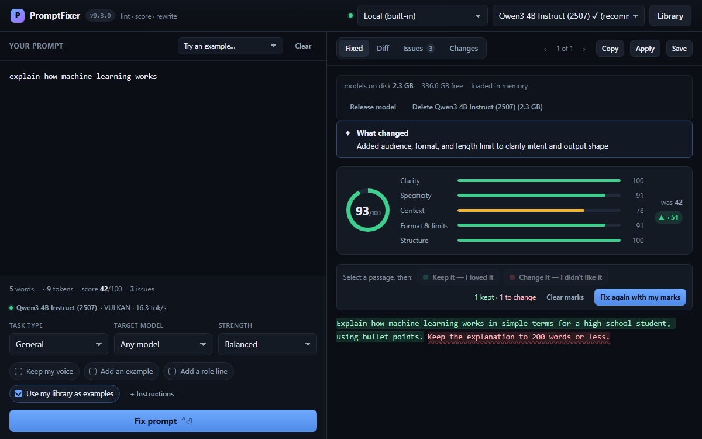

Windows desktop app · Open source, MIT
Lint, score and rewrite your LLM prompts. Offline.
PromptFixer scores a prompt against about thirty prompt-engineering rules, then a built-in local model rewrites it and the rewrite is scored again, so you can see whether it really got better. It works offline, nothing you type leaves your machine, and an automated test checks that on every push.
Windows 10 or 11, 64-bit. The 2.5 GB model downloads on first run; after that it works offline.

How it works
Three steps, and the score stays comparable through all of them.
-
Paste
Paste a prompt and it is scored instantly against about thirty prompt-engineering rules, with the findings grouped by category and severity. The linter is deterministic and local: no model is involved, and nothing is sent anywhere.
-
Fix
Press Fix prompt and the local model rewrites it. The rewrite is scored again with the same rules, next to a word-level diff and a change log that explains every edit. Choose a strength, Light touch, Balanced or Full rebuild, and a guard retries a rewrite that changed too much or pasted its own instructions into the output.
-
Mark and fix again
Not quite what you wanted? Select a passage of the rewrite and mark it Keep it — I loved it or Change it — I didn't like it, then press Fix again with my marks. What you kept comes back word for word, what you disliked is reworded, and the result is still scored against the prompt you wrote.
What you get
Scoring is instant and local; the rewrite needs the model downloaded once.
-
Private by design
The default model runs on your machine. There is no telemetry, no analytics, no crash reporting, no licence check and no update check. docs/PRIVACY.md names every host the app can reach, and when.
-
Built-in local model
Qwen3-4B-Instruct-2507 (2.5 GB) by default, with a 1 GB lite tier for machines with 4 GB of RAM and a 4.7 GB quality tier. CUDA, Vulkan or Metal is picked automatically, with a CPU fallback.
-
Watch the rewrite arrive
The rewrite streams into the Fixed tab as the model writes it, and the spinner names which wait you are in: queued behind another job, loading the model, writing, or a second attempt after a failed quality check.
-
A library that teaches the model
Save a prompt with its rewrite, and your saved rewrites are shown to the model as examples of how much change you like. Export the library as JSON and import it on another machine, merged without overwriting anything.
-
Diff and change log
Every rewrite comes with a word-level diff and a change log explaining each edit, and is scored before and after with identical rules, which is what makes the comparison meaningful.
-
Cloud providers, optional
Anthropic, OpenAI, OpenRouter, Gemini, Ollama or any OpenAI-compatible endpoint, switched on with a
.envfile. Off by default, and nothing requires them. -
Lint prompts in CI
npm run lint:promptsruns the same rules over your prompt files and exits non-zero when one falls below the bar. No server, no model, no API key. -
Tested on every push
Unit and component tests, an acceptance suite that drives the real app in a browser and in Electron, and a visual check with Elastishot that names the element behind every difference it finds.
Download
One file, no account, nothing to install first. Windows 10 or 11, 64-bit.
Before you run it
Check the download
In PowerShell, from the folder you saved it to. The result must equal the SHA-256 of the
release, shown on the download card, which is also in
SHA256SUMS.txt on its release page.
(Get-FileHash .\PromptFixer-<version>-win-x64.exe).Hash.ToLower()Not code-signed yet
Windows shows a blue "Windows protected your PC" screen because the installer is not code-signed. Click More info, then Run anyway, once the hash matches.
Upgrading
Your library and the downloaded model live outside the app and survive uninstalling and reinstalling.
What's new
Every release, newest first, with the notes as they were published.
The release notes could not be loaded on this page. Read them on the GitHub releases page.